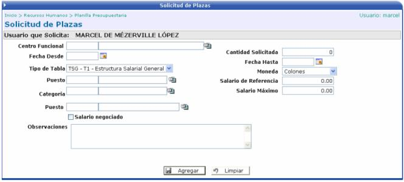

En esta opción, el usuario tiene la posibilidad de solicitar plazas. Adicionalmente aquí ingresarán las solicitudes realizadas y aplicadas desde el módulo de Autogestión, para que aquí el usuario termine de completar la información.
Si la solicitud se hace desde esta opción, se debe de llenar la información que se solicita en pantalla, como el centro funcional, la tabla salarial, el puesto, el salario, etc. Si se activa el check “Salario Negociado” se desplegará una sección adicional, para que el usuario le ingrese componentes salariales a la plaza.
